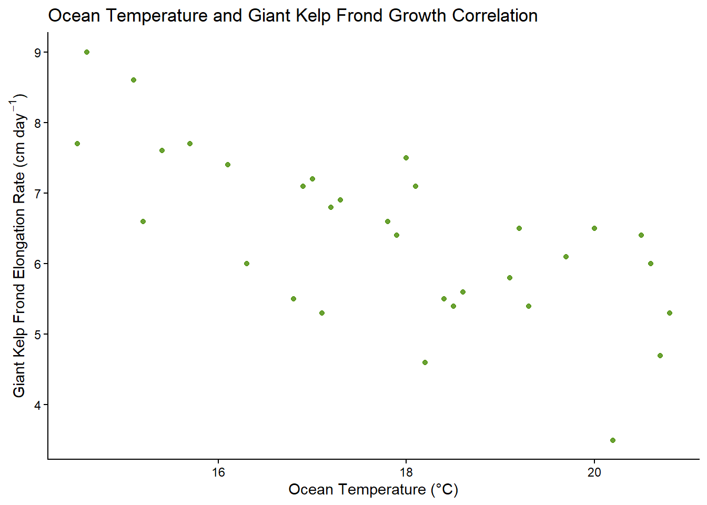
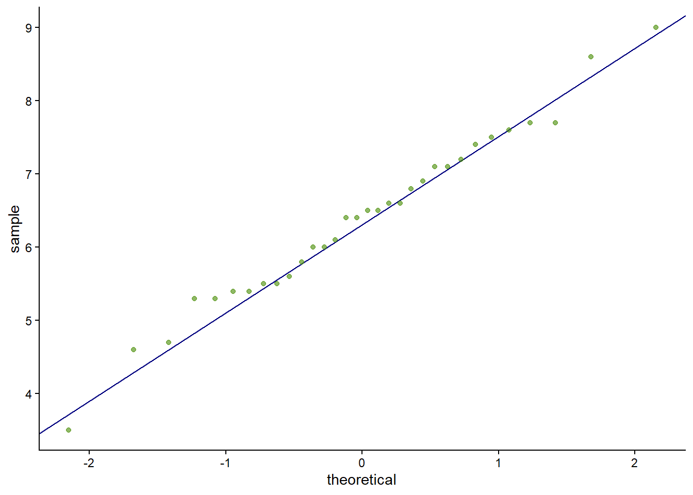
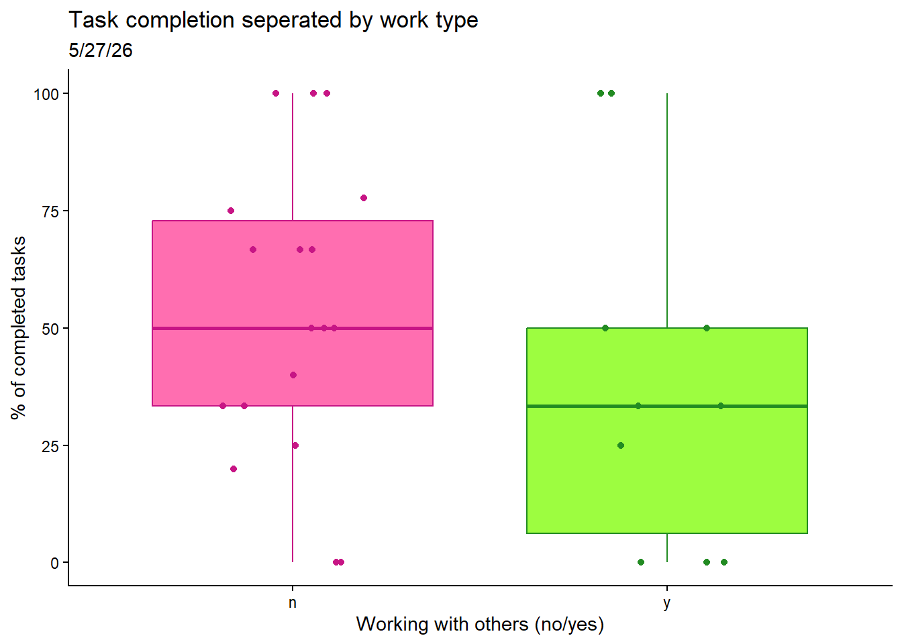
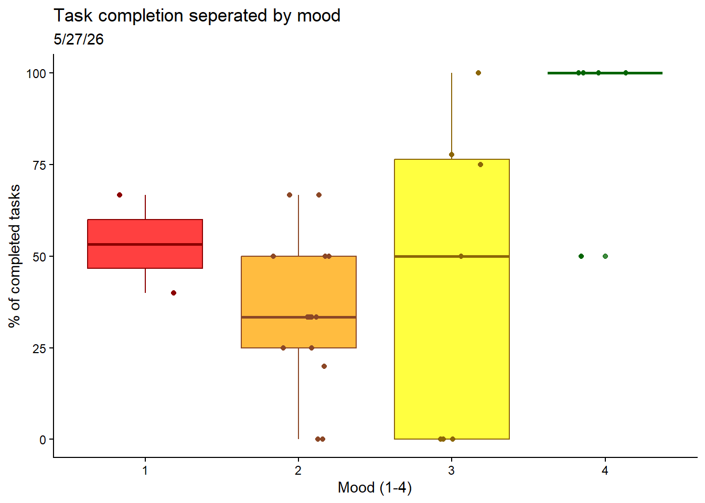
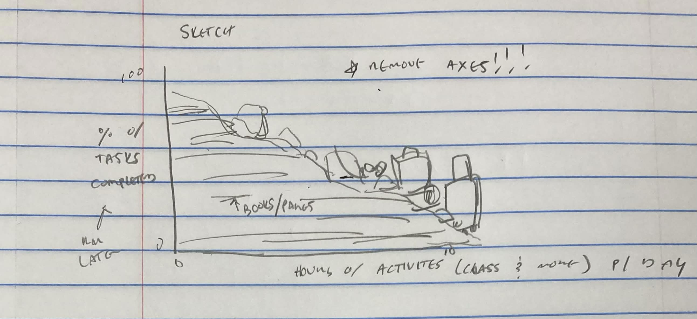
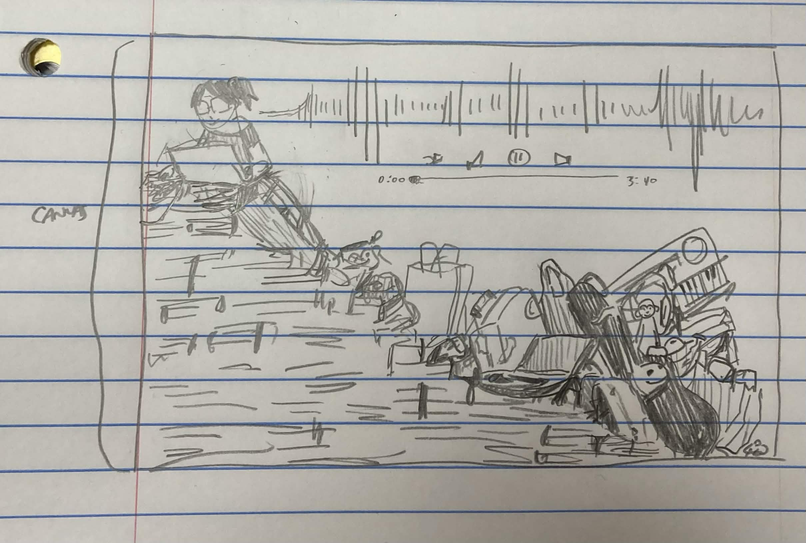
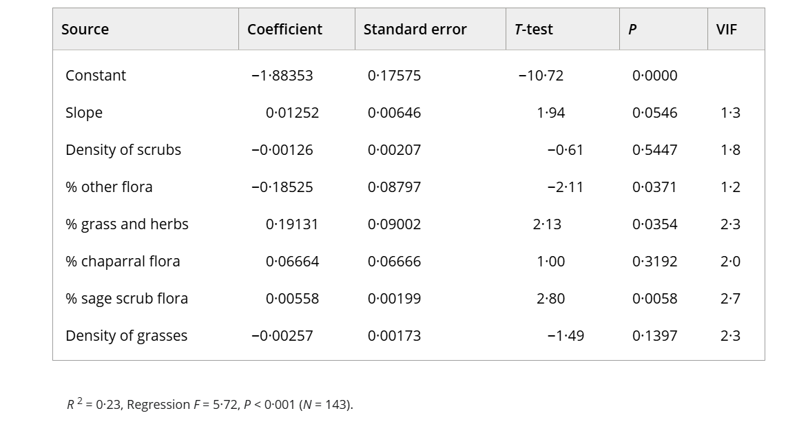

# reading in packages
library(tidyverse)
library(here)
library(janitor)
library(readxl)Set Up
Packages
Data:
# creating object from 'kelp' from data
kelp <- read.csv('temp-kelp.csv')
# creating object 'mz_data' from data
mz_data <- read_xlsx('193DS-personal-data.xlsx')Cleaning
# create new object called 'mz_clean' from 'mz_data'
mz_clean <- mz_data |>
# clean names
clean_names() |>
# create new data column 'completed_v_intended'
mutate(
# use data from select columns to calculate new column
completed_v_intended = (
number_of_completed_tasks/number_of_intended_tasks
) * 100)Aesthetics
# setting figure themes
theme_set(theme_classic())Problem 1
a.
The appropriate tests to determine the strength of the relationship between temperature and giant kelp frond elongation rate are the Pearson’s correlation test and the Spearman rank correlation test. While both tests can be used to determine relationship strength, Pearson’s correlation is parametric, assuming continuous and normally distributed variables with independent observations, and explores the linear relationship between variables. On the other hand, the Spearman rank correlation is non-parametric, assuming independent observations, and explores the monotonic relationship between variables.
b.
# base layer: ggplot
ggplot(
# starting data frame
data = kelp,
# x-axis
mapping = aes(x = temp_c,
# y-axis
y = kelp_elong)
) +
# first layer: points
geom_point(
# coloring points
color = 'chartreuse4',
# changing opacity
alpha = 0.8
) +
# relabelling x-axis, y-axis, and title
labs(
# label x-axis
x = 'Ocean Temperature (°C)',
# label y-axis
y = expression(paste('Giant Kelp Frond Elongation Rate (cm day' ^-1,')')),
# add chart title
title = 'Ocean Temperature and Giant Kelp Frond Growth Correlation')
c.
assumption checking
# base layer: ggplot
ggplot(
# starting data frame
data = kelp,
# x-axis
mapping = aes(x = temp_c,
# y-axis
y = kelp_elong)
) +
# first layer: points
geom_point(
# coloring points
color = 'chartreuse4',
# changing opacity
alpha = 0.8
) +
# relabelling x-axis, y-axis, and title
labs(
# label x-axis
x = 'Ocean Temperature (°C)',
# label y-axis
y = expression(paste('Giant Kelp Frond Elongation Rate (cm day' ^-1,')')),
# add chart title
title = 'Ocean Temperature and Giant Kelp Frond Growth Correlation')
Because I plan on running a Spearmans rank correlation test, I only had to check if my data was independent and monotonic. I checked independence by ensuring that proper methodology was being used when collecting data (data collected individually, stated in Problem 1 introduction), and for a monotonic relationship by creating a visualization. After checking my assumptions, I concluded that I have independent observations, and that my data is monotonic – as ocean temperature increases, giant kelp frond elongation rate decreases.
test running
# correlation test
cor.test(
# y-variable
kelp$kelp_elong,
# x-variable
kelp$temp_c,
# use spearmans test
method = 'spearman',
# use normal p-approximation
exact = FALSE)
Spearman's rank correlation rho
data: kelp$kelp_elong and kelp$temp_c
S = 9216.1, p-value = 1.29e-05
alternative hypothesis: true rho is not equal to 0
sample estimates:
rho
-0.6891684 d.
To evaluate the strength of the relationship between temperature and giant kelp frond elongation rate I used a Spearmans rank correlation test. I chose to use Spearmans test over Pearsons as I did not check for normality nor a linear relationship. After running the Spearmans test, I found a moderate negative relationship between ocean temperature and giant kelp frond elongation rate (Spearman \(\rho\) = -0.69, S = 9216.1, p = 1.29 * 10-5, \(\alpha\) = 0.05).
e.
There is a moderate correlation between ocean temperature and giant kelp frond elongation rate. As temperature increases, kelp frond elongation rate decreases, indicating decreased growth with warming temperatures. This information is important for giant kelp health – the ongoing climate crisis and subsequent consistently warming ocean temperatures hold significant negative implications for giant kelp health over time; without action against climate change (and warming oceans), giant kelp populations will degrade over time, potentially leading to larger-scale ecosystem damages.
f.
assumption checking
# base layer: ggplot
ggplot(
# starting data frame
data = kelp,
# y-axis: kelp frond elongation rate
mapping = aes(sample = kelp_elong)
) +
# first layer: QQ reference line
geom_qq_line(
# coloring line
color = 'navyblue'
) +
# second layer: QQ points
geom_qq(
# coloring points
color = 'chartreuse4',
# changing opacity
alpha = 0.6
) 
test running
# correlation test
cor.test(
# y-variable
kelp$kelp_elong,
# x-variable
kelp$temp_c,
# use pearsons test
method = 'pearson')
Pearson's product-moment correlation
data: kelp$kelp_elong and kelp$temp_c
t = -5.189, df = 30, p-value = 1.366e-05
alternative hypothesis: true correlation is not equal to 0
95 percent confidence interval:
-0.8359665 -0.4460157
sample estimates:
cor
-0.6877489 Yes, both tests would have led me to the same decision – finding a moderate negative relationship and rejecting the null – as both tests resulted in a moderate negative correlation of -0.69. After running the Pearson’s test, I found a moderate negative relationship between ocean temperature and giant kelp frond elongation rate (Pearson’s r = -0.69, t(30) = -5.19, p = 1.37 * 10-5, \(\alpha\) = 0.05). This conclusion is the same as my conclusion after running the Spearman’s test.
Problem 2
a.
# base layer: ggplot
ggplot(
# use data frame 'mz_clean'
data = mz_clean,
# x from 'working_with_others_y_n' col
mapping = aes(x = working_with_others_y_n,
# y from 'completed_v_intended' col
y = completed_v_intended,
# coloring by 'working_with_others_y_n'
color = working_with_others_y_n,
# fill by 'working_with_others_y_n'
fill = working_with_others_y_n)
) +
# first layer: boxplot
geom_boxplot(
# reduce opacity
alpha = 0.75
) +
# second layer: jitterplot
geom_jitter(
# remove vertical jitter
height = 0,
# add horizontal jitter
width = 0.2
) +
# changing colors
scale_color_manual(
# 'forestgreen' for 'y'
values = c('y' = 'forestgreen',
# 'mediumvioletred' for 'n'
'n' = 'mediumvioletred')
) +
# changing fill colors
scale_fill_manual(
# 'lawngreen' for 'y'
values = c('y' ='lawngreen',
# 'violetred' for n
'n' = 'violetred1')
) +
# changing titles and axes names
labs(
# label x axis
x = 'Working with others (no/yes)',
# label y axis
y = '% of completed tasks',
# change title
title = 'Task completion seperated by work type',
# change subtitle
subtitle = '5/27/26') +
# remove legend
theme(
legend.position = 'none'
)
# base layer: ggplot
ggplot(
# use data frame 'mz_clean'
data = mz_clean,
# x from 'mood_exhaustion_1_5' col
mapping = aes(x = mood_exhaustion_1_5,
# y from 'completed_v_intended' col
y = completed_v_intended,
# group by 'mood_exhaustion_1_5'
group = mood_exhaustion_1_5,
# fill by 'mood_exhaustion_1_5'
fill = mood_exhaustion_1_5,
color = mood_exhaustion_1_5)
) +
# first layer: boxplot
geom_boxplot(
# reduce opacity
alpha = 0.75
) +
# second layer: jitterplot
geom_jitter(
# remove vertical jitter
height = 0,
# add horizontal jitter
width = 0.2
) +
# changing colors
scale_color_manual(
# 'darkred' for 'one'
values = c('a1' ='darkred',
# 'sienna4' for 'two'
'b2' = 'sienna4',
# 'darkgoldenrod4' for 'three'
'c3' = 'darkgoldenrod4',
# 'darkgreen' for 'four'
'd4' = 'darkgreen',
# 'navy' for 'five'
'e5' = 'navy')
) +
# changing fill colors
scale_fill_manual(
# 'red' for 'one'
values = c('a1' ='red',
# 'orange' for 'two'
'b2' = 'orange',
# 'yellow' for 'three'
'c3' = 'yellow',
# 'green' for 'four'
'd4' = 'green')
) +
# changing x-axis displays
scale_x_discrete(
# a1 to 1
labels = c('a1' = '1',
# b2 to 2
'b2' = '2',
# c3 to 3
'c3' = '3',
# d4 to 4
'd4' = '4',
# e5 to 5
'e5' = '5')
) +
# changing titles and axes names
labs(
# label x axis
x = 'Mood (1-4)',
# label y axis
y = '% of completed tasks',
# change title
title = 'Task completion seperated by mood',
# change subtitle
subtitle = '5/27/26') +
# remove legend
theme(
legend.position = 'none'
)
b.
Work type figure Caption: Task Completion Separated by Work Type. Box plots of work completion depending on environment. Pink plot represents working alone, green plot represents working with other. Each data point represents an individual measurement of completed task percentage for the day, from 4/23/26 to 5/27/26. Fences are the IQRs (25th and 75th percentiles), with the median (50th percentile) of collected data per environment as a line in between each respective box. Whiskers represent minimum and maximum values (1.5 x lower or upper IQR bound)
Mood figure Caption: Task Completion Separated by mood. Box plots of work completion depending on a mood scale of 1-4, with 1 being the lowest and 4 being the highest (within the data). Red plot is a mood of 1, orange plot is a mood of 2, yellow plot is a mood of 3, and green plot is a mood of 4. Each data point represents an individual measurement of completed task percentage for the day, from 4/23/26 to 5/27/26. Fences are the IQRs (25th and 75th percentiles), with the median (50th percentile) of collected data per environment as a line in between each respective box. Whiskers represent minimum and maximum values (1.5 x lower or upper IQR bound)
Problem 3
a.
An affective visualization for my personal data could take the form of a drawing, showing box plots – representing mood – that are being climbed/conquered by a person. For example, if a good mood leads to more work being completed, an affective visualization could show a raised large stack of papers (higher box plot) with sticky tabs sticking out (overlaid data) and a confident/smiling person lifting them above their head. Another affective visualization could be another drawing, showing a linear model – representing work completed – that is being “weighed down” by the amount of things that I have in my bag (representing the time I spend on campus). Both of these “statistical visualizations” (boxplot, linear model) would be represented via something like stacks of paper, rather than points/lines indicating work being completed. Ideally these visualizations would make the viewer understand what factors/feelings/emotions are influencing work completion, and better relate/understand the graph.
b.

c.

d.
I am showing an affective representation of how productivity changes depending on activities – in this case, I am showing productivity as stacks of papers/books being completed, and activities as a bunch of items/things (for instance, a backpack for class, climbing shoes, etc.) that increase as activities increase. I got influences from Jill Pelto’s paintings; I really liked how oftentimes data was represented as mountains/rivers/cracks on a glacier, etc. I tried to emulate something similar, showing data as a “mountain” of papers. Outside of Jill Pelto, I got influences from my daily life; the items depicted are all reflective of things that I have had to carry around for activities before. The form of my work is going to be a digital drawing – however, I currently have no access to my drawing software so I am drawing it on paper before transferring it onto my computer. To create my work, I looked at many of the items that I own, and wondered how each one could potentially tie in my actives that I do every day. People have often told me that I always carry way too many things, which made me think about why, and the relationship between my carried items, busyness, and subsequent productivity. I also added some details that I just thought would be fun, and a better representation of me – for instance, I plan to put a drawing of an album cover that I like in the background, I have a drawing of me doing work on top of the “mountain”, etc.
e.
Problem 4
a.
In this paper, the researchers use multiple statistical tests to analyze the effect of landscape differences (size, disturbance, etc.) on shrew population abundance. The statistical tests that the authors are using to address their main research question are linear regression, logsitic regression, ANOVA, Shapiro-Wilk, and the Kruskal-Wallis tests. Attached below is a table created using data from a linear regression test, showing how different landscapes can impact a specifc shrews species (Notiosorex crawfordi) population distribution and abundance.

b.
The table clearly represents the data underlying the tests. It displays each predictor (ex. control, density of scrubs, etc.) and the variables for each predictor used to calculate expected shrew abundance in locales displaying variations of these predictors. This clearly shows the data that the scientists used to run the tests. However, it is lacking in data showing how these variables were found, which is likely in another table.
c.
The authors moderately handle visual clutter. While it is clear what is being displayed in the table as there is little non-data information provided, the table itself has inconsistent formatting, with misaligned numbers/columns. However, the “data:ink ratio” is very low/good – the majority of “ink” is being used to represent actual data – there is very little visual clutter relative to the information being presented. Subsequently, while the aesthetics/organization could be better, the visual clutter is low, and the data is clearly communicable.
d.
To make this table better, I would relabel the ‘Source’ column to ‘Predictors’, reformat/align the data within the columns, and add column lines to help organize my data/make my table look neater. The first change is because the variables listed under ‘Source’ are all variables that are being used to predict shrew abundance; subsequently, changing the column title will make it clearer to the reader what they are looking at – they will not have to figure out what ‘Source’ indicates, and will have a better understanding that these variables are being used as predictors in the linear regression data. The remaining two changes are to improve table organization: currently the data is misaligned with inconsistent margins – by aligning margins, and putting clear column lines in which to align margins to, the chart will look better and be easier to read.